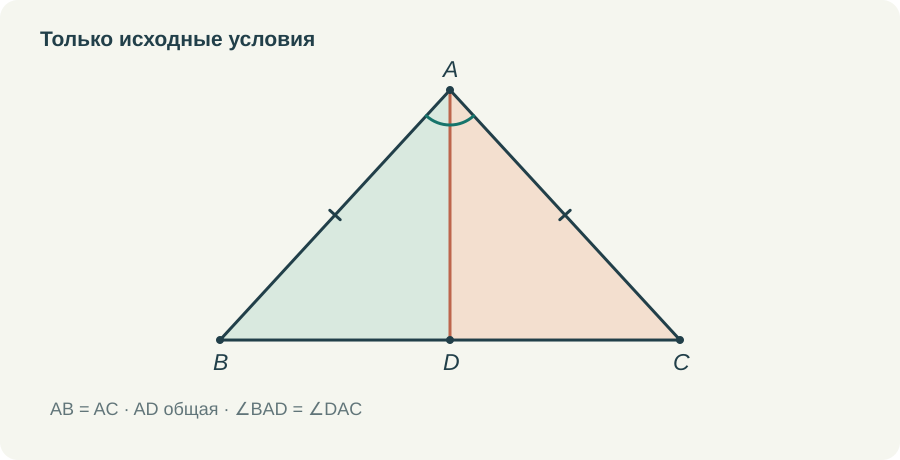
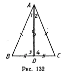
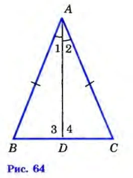
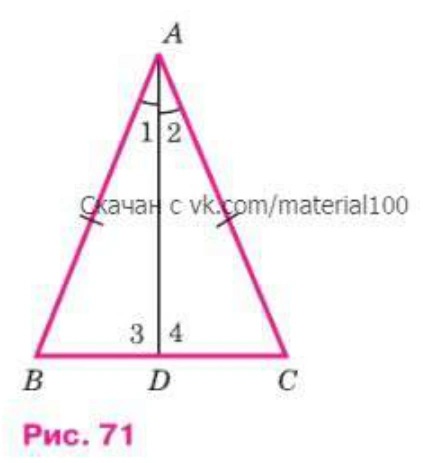

Равнобедренный треугольник очень располагает к преждевременному «это же видно». Он похож на симметричную крышу, углы при основании выглядят одинаковыми, линия из вершины кажется одновременно медианой, биссектрисой и высотой. Но именно на этой теме можно показать, как геометрия превращает зрительное предположение в доказанное свойство.
Я бы не прятала симметрию. Её полезно заметить, а затем спросить, какое условие позволяет нам на неё рассчитывать. По определению известны две равные стороны. Остальное надо получить. Если это различие удержано, короткое доказательство становится для ученика содержательной работой.
Сначала выбрать, что провести
Пусть AB = AC. Требуется доказать равенство углов при основании BC. Чтобы воспользоваться первым признаком, нужно получить два треугольника, у которых есть две пары равных сторон и равные углы между ними.
Равные стороны AB и AC уже даны. Второй стороной может стать общий отрезок из вершины A к основанию. А равенство углов между ними обеспечит биссектриса AD. Так появляется причина построения. Мы проводим её потому, что она создаёт недостающее условие для известного признака.
На готовом рисунке выбор кажется очевидным. До построения ученик может этого не видеть. Поэтому в объяснении я оставляю паузу между вопросом «чего не хватает?» и появлением AD. Хорошо, если ребёнок успеет назвать равные углы сам. Пауза здесь полезнее дополнительного декоративного движения.


Три основания для одного вывода
Сравниваем треугольники ABD и ACD. AB = AC по условию. AD — общая сторона. ∠BAD = ∠DAC, потому что AD выбрана биссектрисой. Углы лежат между названными сторонами. Следовательно, треугольники равны по первому признаку.
Порядок букв здесь помогает, а не просто украшает запись. Вершине A соответствует A, B — C, D — D. Поэтому углу ABD соответствует угол ACD. Так как D лежит на BC, это углы при основании исходного треугольника. Они равны как соответствующие углы равных треугольников.
В этой короткой цепочке полезно отдельно заметить общую сторону. Ученик нередко считает, что для равенства обязательно должны быть нарисованы два разных отрезка. Здесь одна и та же AD рассматривается как сторона каждого из двух треугольников. Никакого дополнительного условия о ней получать не нужно.
И полезно не сокращать сразу последнюю фразу. Мы сравнили треугольники ради определённых углов. Нужно назвать, какие углы получились равными и почему это именно те углы, о которых спрашивалось. Иначе ребёнок научится заканчивать любую задачу на середине словами «треугольники равны».
Что ещё получилось из того же сравнения
Из равенства ABD и ACD следует BD = DC. Значит, D — середина BC, а AD является медианой. Это новый результат, которого не было в исходном условии. Теперь одинаковые засечки на частях основания можно добавить законно.
Также равны углы ADB и ADC. Они смежные, потому что DB и DC — противоположные лучи. Их сумма составляет 180°. Два равных угла с такой суммой имеют величину 90° каждый. Получается AD ⟂ BC, следовательно, AD — высота.
Для этого шага не нужна теорема о сумме углов треугольника. Достаточно уже известного свойства смежных углов. Мне важно сохранять эту последовательность: семиклассник должен видеть, что задача решается тем, что он успел изучить, без неожиданной ссылки на будущую главу.
Один выбранный отрезок оказался сразу биссектрисой, медианой и высотой. Теперь совпадение трёх линий на привычном рисунке имеет объяснение. Можно снова повернуть треугольник или сделать его более широким. Доказательство не меняется, пока сохраняется равенство боковых сторон.
Здесь различие изданий действительно существенно
В пробном учебнике для 6 класса 1987 года равенство углов при основании доказывается через биссектрису и первый признак на с. 37–38. А отдельное свойство медианы равнобедренного треугольника появляется позднее, на с. 66. Там исходным отрезком служит медиана, и равенство половин треугольника устанавливается по третьему признаку. После этого получаются свойства биссектрисы и высоты.
В проверенных изданиях 2010 и 2023 годов соответствующие теоремы стоят рядом, на с. 35–36. Вторая начинается с биссектрисы и использует равенство треугольников, уже полученное при доказательстве свойства углов. На рисунке 1987 года отмечены равные части основания; на рисунке 2023 года особенно заметно деление угла при вершине.






Мне ближе объяснение, где ребёнок сразу видит, как один первый признак даёт несколько связанных выводов. Но и возвращение к той же фигуре после третьего признака имеет смысл: можно сравнить два доказательства. Важно не смешать их исходные условия. Это сопоставление трёх конкретных изданий; по нему нельзя определить, в каком году изменился порядок во всей учебной линии.
Где легко получить круг
Если до доказательства провести «ось симметрии» и сразу объявить, что она делит основание пополам и перпендикулярна ему, большая часть результата уже окажется принятой без основания. Для ученика картинка будет убедительной, но ход рассуждения исчезнет.
Поэтому я бы называла отрезок сначала только тем именем, которое обеспечено построением: биссектриса. После первого признака появляется право назвать его медианой. После рассуждения о смежных углах — высотой. Изменение подписей и отметок в анимации может очень точно показать эту последовательность.
Есть и другая тонкость. У равнобедренного треугольника говорится о линии, проведённой к основанию из вершины между равными сторонами. Из другой вершины медиана вообще не обязана совпадать с биссектрисой и высотой. Если в формулировке потерять, откуда проведён отрезок, получится неверное обобщение.
От доказательства к задачам
Сразу после разбора я бы дала небольшую задачу с пропуском основания. Например: почему BD = DC? Затем задачу на соответствие углов, а потом — рисунок с другими буквами и поворотом. Только после этого имеет смысл просить полное самостоятельное доказательство.
В вычислительной задаче можно задать боковую сторону 7 см и периметр 20 см. Основание получится 6 см, его половина — 3 см. Здесь важно спросить, почему вычитаются именно две семёрки и какое доказанное свойство позволяет затем делить основание пополам. Числа должны поддерживать геометрическую мысль.
Следующий шаг — убрать удобную подсказку о биссектрисе и предложить выбрать вспомогательную линию самому. Если ребёнок пока не может её придумать, можно вернуться к вопросу о двух треугольниках и недостающем условии первого признака. Это помощь в поиске, а не выдача готового текста.
Именно такой результат мне нужен от темы: ученик умеет не только пересказать доказательство, но и объяснить, зачем появился отрезок AD. Тогда следующая вспомогательная линия уже не выглядит фокусом, который почему-то приходит в голову только учителю.
Попробовать в курсе
Откройте задание в личном кабинете: там сохраняется работа и доступна сдача учителю. Видео и шпаргалку можно посмотреть отдельно.